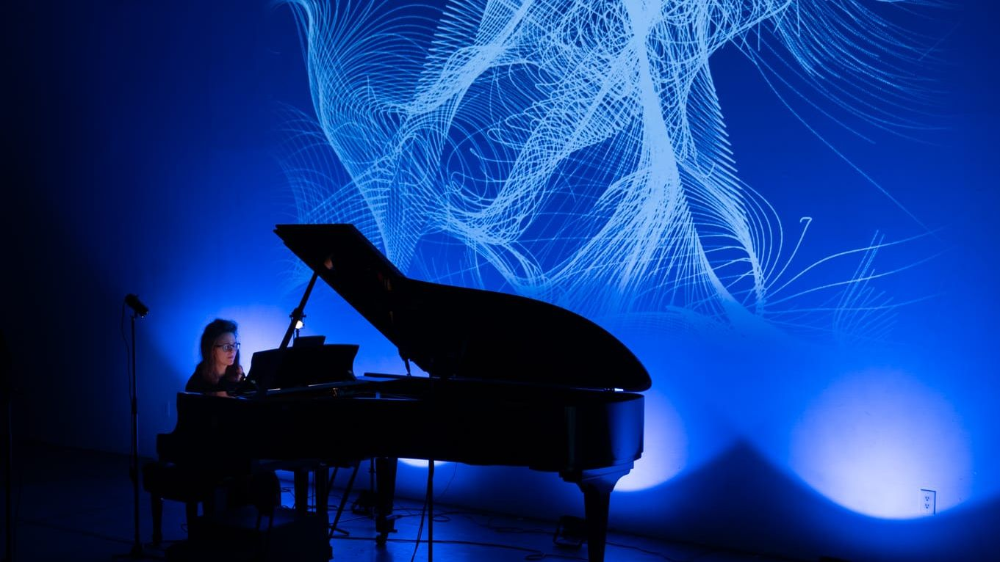

Vídeos
Grabaciones de los conciertos de CreArtBox, el colectivo que co-dirijo y con el que toco. Del repertorio de cámara a los estrenos de compositores vivos.
El proyecto
Qué es CreArtBox, cómo se prepara una producción y el resumen de una edición del festival.